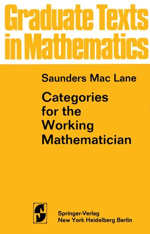

Academic Interests, personal history
I'm a researcher at the University of Waterloo. My specialization is in black hole thermodynamics and quantum information theory. I was born in downtown Toronto, and raised in Fredericton, New Brunswick. The streetcorner I lived on in Toronto is mentioned in André Alexis' Fifteen Dogs. Broadly speaking, my primary academic interests are in mathematical physics, general relativity, and quantum fields. I dabble in pure math, theoretical computer science, and numerical relativity for fun and for perspective. I have an aesthetic taste for algebra over analysis, though find myself using analytic techniques more often. Previously, I've worked as a researcher in optical physics for both public and private organizations.
What else am I into?
Outside of work I appreciate film, fine arts, music, literature, cycling, sailing, and hanging out in hip cafés both with and without my friends. I also must admit a particularity when it comes to stationary, and when it comes to the software I use. I've got interests in political philosophy and foreign languages, in particular those spoken by my forebears — Yiddish, Russian, German, and French being the foci. I'm not religious, but I was raised in a Jewish household and maintain much of the traditional and cultural practice very strongly. It's a little tricky to explain, but you'd probably know what I meant if you met me.
I am also driven to distraction by my political inclinations, which are primarily influenced by Marx. I'm not entirely sure what Marxist physics is supposed to look like, but I can safely say it involves lifting academic physics out of the clutches of military and industrial research which bankrolls so much development, and moving the field towards problems that address problems the world over will face. In particular when it comes to modes of energy production. It also means highlighting and emphasizing the work being done by those whose works go too-often ignored and too-often overwritten for reasons of biggotry. It means working to ensure that the departmental PR-speak about diversity, inclusion, and equity doesn't stop at the annual board report, but that real action is taken. And, because people working in physics do have some cultural sway, it means using that sway to highlight important issues in our community from the local to the global level.
|  |
If I were a Springer-Verlag Graduate Text in Mathematics, I would be Saunders Mac Lane's Categories for the Working Mathematician. I provide an array of general ideas useful in a wide variety of fields. Starting from foundations, I illuminate the concepts of category, functor, natural transformation, and duality. I then turn to adjoint functors, which provide a description of universal constructions, an analysis of the representation of functors by sets of morphisms, and a means of manipulating direct and inverse limits. |